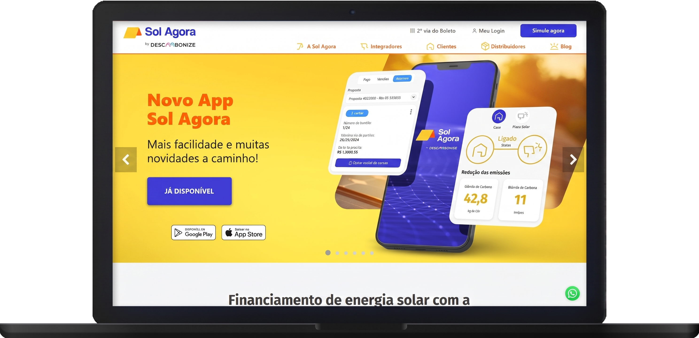
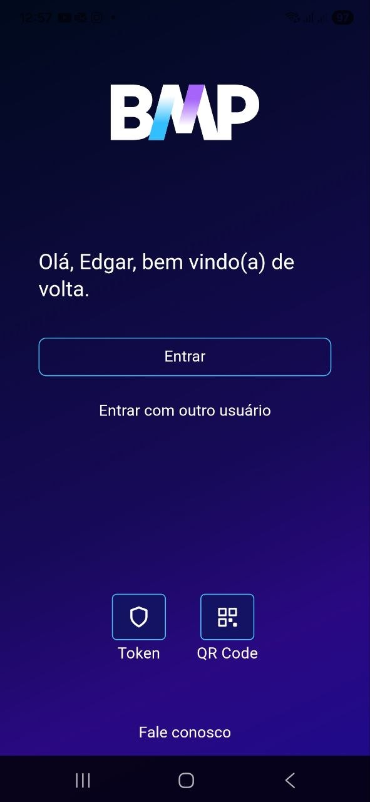
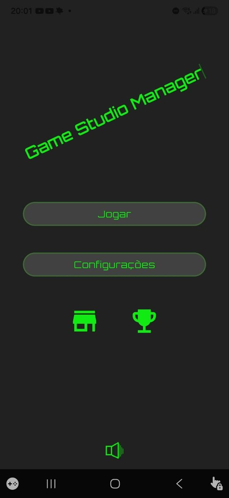
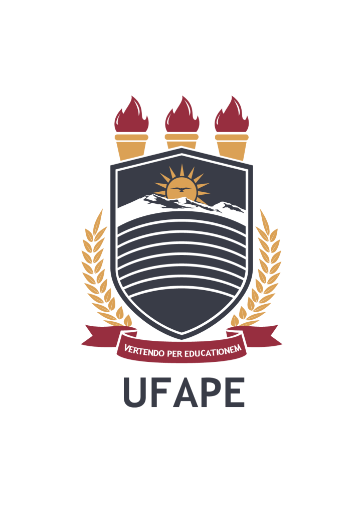
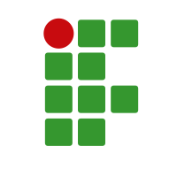

Portfólio de Software
Apresentando, Edgar Vital
Desenvolvo sistemas web, mobile e backend com foco em arquitetura, confiabilidade, segurança e impacto real.
Minha trajetória na área de tecnologia começou em 2013, aos 14 anos, quando ingressei no curso Técnico em Informática no Instituto Federal de Pernambuco (IFPE). Durante os quatro anos de formação, adquiri uma base sólida em desenvolvimento de software, abrangendo diferentes stacks, como mobile, web, front-end, desktop e sistemas embarcados. Meu trabalho de conclusão de curso explorou sistemas embarcados, demonstrando minha capacidade de inovar em áreas diversas.
Após concluir o técnico, iniciei minha graduação em Ciência da Computação na Universidade Federal do Agreste de Pernambuco (UFAPE), onde continuei ampliando meus conhecimentos. Durante esse período, tive meu primeiro contato profissional no Laboratório Multidisciplinar de Tecnologias Sociais (LMTS), onde desenvolvi sistemas institucionais e sociais utilizando o framework Laravel (PHP) integrado com Blade e JQuery.
Em 2021, durante a pandemia, fui contratado pela Secretaria de Saúde de Garanhuns para liderar o desenvolvimento e a manutenção do Vem Vacina Garanhuns, um sistema crucial no combate à COVID-19, que beneficiou mais de 100 mil habitantes. Essa experiência fortaleceu minha expertise em modelagem e manutenção de sistemas de grande impacto social.
Atualmente, atuo na Overdrive Software e Consultoria, onde integro o time de produtos internos. Iniciei desenvolvendo o back-end de sistemas utilizando Laravel (PHP) e posteriormente expandi minhas habilidades com .NET (C#). Recentemente, foquei no desenvolvimento mobile com Flutter (Dart), criando e mantendo aplicações robustas, incluindo um jogo que demonstra minha habilidade em atender demandas inovadoras.
Com ampla experiência em linguagens de programação como Java, PHP, Dart, C#, C, Python e Ruby, meu percurso reflete um compromisso com aprendizado contínuo e adaptação às tecnologias mais relevantes para atender às necessidades do mercado.
Informações Técnicas
Linguagens de Programação
- Java, JavaScript, PHP, Dart, C#, C, Python, Ruby
Frameworks e Ferramentas
- Laravel, Flutter, .NET, Ruby on Rails
- Git, MySQL, PostgreSQL, Docker, Keycloak
Áreas de Atuação
- Desenvolvimento e manutenção de sistemas backend
- Desenvolvimento e manutenção de aplicativos mobile
- Modelagem de Banco de Dados
Pilares Profissionais
- Clean Code
- Trabalho em Equipe
- Arquitetura de Software
- Resolução de Problemas
- Desenvolvimento Ágil
- Adaptabilidade a Novas Tecnologias

Sistemas Web
Atuei como colaborador em...

Plataforma Eletrônica de Gestão de Almoxarifados (PEGA)
É uma aplicação web criada pela parceria UFAPE-LMTS/UPE para informatizar a gestão de almoxarifados, facilitando tarefas como controle de estoque e atendimento de pedidos de materiais. As funcionalidades principais incluem:Para Administradores: cadastrar/editar usuários, materiais e depósitos; consultar estoque e histórico; gerenciar entrada, saída e transferências de materiais; aprovar, negar e entregar solicitações.
Para Requerentes: editar perfil e senha; fazer solicitações de materiais; consultar histórico de pedidos.

Sistema de Submissão de Projetos (Submeta)
O Submeta é um sistema de submissão de projetos acadêmicos, que pode ser adotado para os diferentes propósitos de Ensino, Pesquisa e Extensão. O sistema abrange todas as principais etapas relacionadas à submissão de projetos, permitindo o lançamento e configuração de editais, além de gerenciar a distribuição das avaliações e os pareceres técnicos dos avaliadores, como também, visualizar os projetos submetidos pelos proponentes.
Certifica
O Certifica é uma plataforma web desenvolvida pela UFAPE, em parceria com a Pró-Reitoria de Extensão e Cultura, com o objetivo de aprimorar a eficiência da gestão pública na criação e gerenciamento de certificados emitidos por setores institucionais. Suas principais funções incluem: cadastro de ações institucionais, importação de integrantes, solicitação e emissão de certificados, verificação de autenticidade, invalidação e consulta de certificados emitidos.
Sistema de Gestão de Comunicação Institucional (SECOM)
O Sistema de Gestão de Comunicação Institucional foi criado para atender demandas do setor e assessoria de Comunicação Institucional da Universidade Federal do Agreste de Pernambuco (UFAPE). Atualmente, a ferramenta possibilita a geração de cartões de aniversário e de clipping customizados a partir da definição de plataforma de coleta dos dados.
Comissão de Ética no Uso de Animais (CEUA)
A CEUA-UFAPE é a Comissão de Ética no Uso de Animais da UFAPE, responsável por avaliar projetos de ensino, pesquisa e extensão que utilizam animais na instituição. Esta comissão é normativa e deliberativa, com funções consultivas e educativas, vinculada à Reitoria e autônoma em suas decisões. Suas principais responsabilidades incluem assegurar o cumprimento da legislação relacionada ao uso ético de animais em experimentos e promover preceitos éticos e morais para sua proteção.O Sistema CEUA Projetos é uma plataforma online dedicada à promoção e regulamentação do uso ético de animais em pesquisas científicas e atividades acadêmicas.

S.O.S. Enade
Este projeto surgiu a partir de uma demanda da Pró-Reitoria de Ensino de Graduação (PREG) e da necessidade de preparar os discentes da UFRPE para realizarem o Exame Nacional de Desempenho de Estudantes (ENADE), visto que é uma prova importante para o desenvolvimento da universidade, elevando tanto seu reconhecimento em aspecto nacional e internacional quanto a possibilidade de maior visibilidade para investimentos público e privado. O software foi desenvolvido como uma plataforma online, utilizando a linguagem de programação PHP com o framework Laravel.O sistema conta com recursos que viabilizam a simulação da prova, com simulados que se adaptam com a real necessidade do curso, podendo ser modelados da forma que o usuário queira, por exemplo, priorizando as disciplinas em que os alunos estão com déficit. Para garantir provas mais consistentes, todas as questões são adicionadas por docentes, separadas pela disciplina, ao banco de dados da universidade. À medida que os alunos concluírem um simulado, os coordenadores receberão estatísticas das respostas, organizadas pela área do conhecimento, para que os mesmos possam conhecer melhor o perfil de aprendizagem dos seus estudantes, e a partir dessa informação definir sua estratégia de atuação.

Sol Agora
A Sol Agora é uma plataforma digital especializada em soluções de financiamento para energia solar, conectando clientes, integradores e distribuidores em um ecossistema 100% online. O sistema visa desburocratizar o acesso à energia limpa, oferecendo processos ágeis com segurança biométrica e assinatura digital integradas. Suas funcionalidades principais incluem:Para Clientes: Realizar simulações de financiamento com parcelas fixas; solicitar crédito para projetos residenciais, comerciais, industriais ou do agronegócio; gerenciar pagamentos e emitir 2ª via de boletos; e monitorar remotamente o desempenho do sistema solar instalado.
Para Integradores: Gestão completa de propostas e acompanhamento online de status; acesso a um canal de atendimento exclusivo via WhatsApp; recebimento direto de pagamentos e conexão com mais de 50 distribuidores parceiros para agilizar a aquisição de equipamentos.
Apps Mobile
Atuei como colaborador nesses apps publicados...

BMP
A BMP é uma conta digital que facilita sua vida. Não precisa de convite nem de esperar em fila para aprovar seu cadastro. De forma amigável e com poucos cliques, você abre sua conta. Você faz tudo pelo celular, sem perder tempo com filas e sem burocracia.
Ver na Play Store
Game Studio Manager
Neste jogo idle, você se torna o desenvolvedor de jogos dos seus sonhos. Crie jogos incríveis escolhendo entre diversos gêneros e subgêneros, além de diferentes plataformas.
Ver na Play StoreExperiência
Acadêmica e Profissional

Mestrado em Ciência da Computação na UFAPE
2025 - 2027 (Em andamento)
Minha pesquisa de mestrado investiga, de forma empírica, vulnerabilidades em arquiteturas de microsserviços orquestradas por Kubernetes. O estudo utiliza um jogo multiplayer desenvolvido em arquitetura poliglota, com serviços em C# e Golang, como ambiente de laboratório para avaliar estratégias de proteção de infraestrutura em cenários de tempo real.
A metodologia está estruturada em três frentes complementares: mapeamento da superfície de ataque do cluster com ferramentas como Kube-hunter e Kube-bench; hardening da infraestrutura com práticas de Zero Trust, autenticação mTLS, isolamento de rede e gestão segura de credenciais com HashiCorp Vault; e análise de impacto, comparando o ganho de segurança com o custo de latência e desempenho imposto às aplicações. O objetivo é consolidar diretrizes práticas para ambientes seguros, otimizados e alinhados às demandas de sistemas distribuídos modernos.
Graduação em Ciência da Computação na Universidade Federal Rural de Pernambuco (UFRPE) e UFAPE
2018 - 2023
A graduação foi a continuação natural da minha formação técnica e me proporcionou visão ampla sobre redes, sistemas distribuídos, escalabilidade e projeto e análise de algoritmos. Disciplinas como Engenharia de Software foram fundamentais para aprimorar práticas de gerenciamento de projetos e metodologias ágeis. Durante o curso, ingressei no Laboratório Multidisciplinar de Tecnologias Sociais (LMTS), onde dediquei grande parte da graduação ao desenvolvimento de sistemas institucionais e soluções para a comunidade. Meu Trabalho de Conclusão de Curso (TCC) foi focado no aprimoramento da Plataforma Eletrônica de Gestão de Almoxarifados, aplicando conceitos avançados de APIs RESTful e arquitetura de software.

Técnico em Informática no IFPE
2013 - 2017
O IFPE marcou o início da minha jornada na programação, onde fui apresentado à lógica computacional e à linguagem Java. Aprendi programação orientada a objetos, engenharia de requisitos, modelagem UML e desenvolvimento de interfaces com Java Swing e PrimeFaces (JSF). No TCC do curso técnico desenvolvi um sistema em C/C++ integrado a um Arduino e sensores de pressão para medir, em tempo real, a eficiência da geração de gás de cozinha em biodigestores locais, contribuindo para pesquisas do curso de Meio Ambiente.